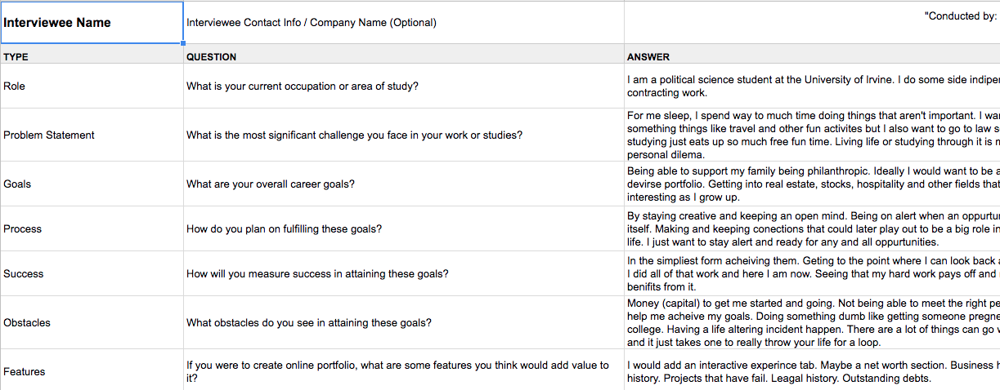
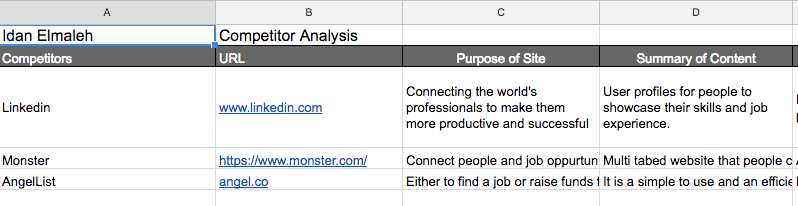
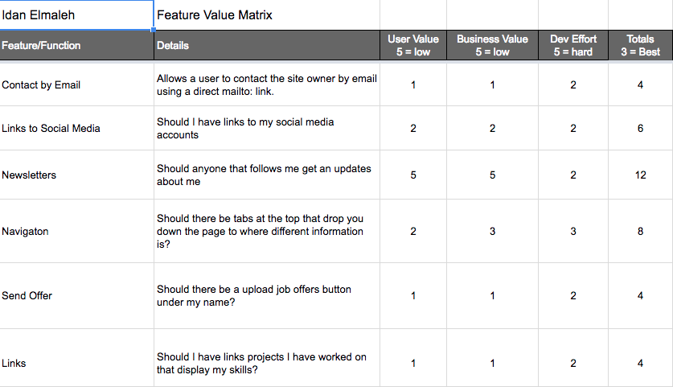
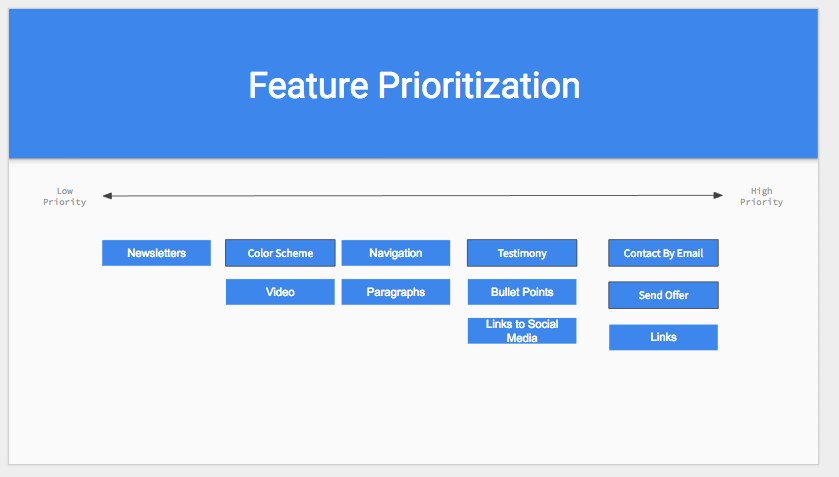
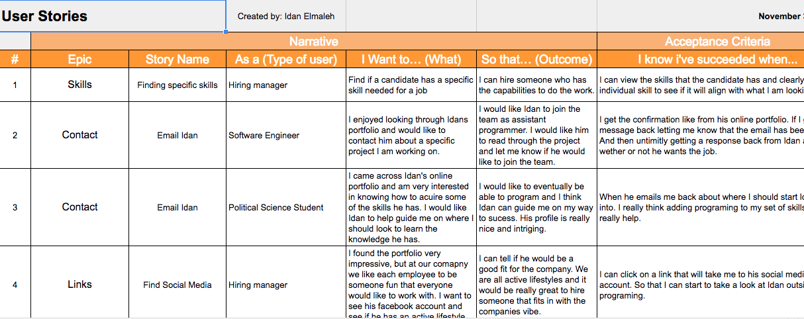
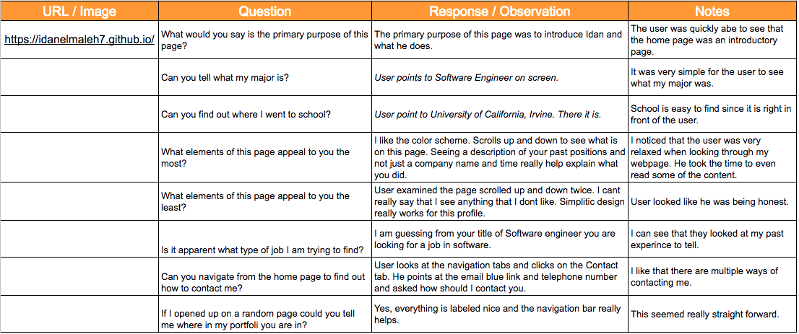
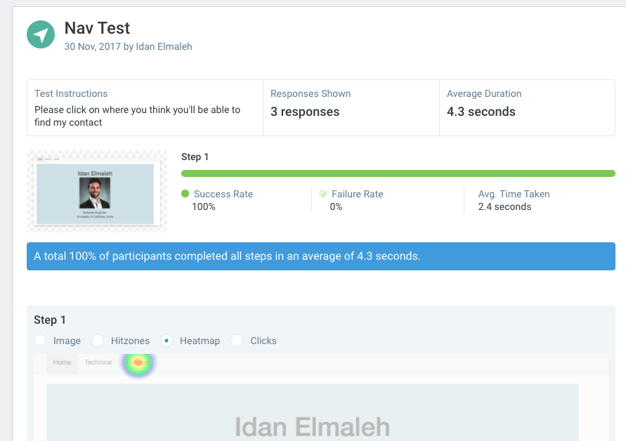

|  |
Before starting this assignment I wasn't sure what I was going to include in my portfolio. The user Interviews allowed me to ask potential users what they would like to see in an online resume. I was able to ask specific questions to hireing managers and they let me know the best information to put. Google Doc User Interviews |
Competitor Analysis |
A competitor analysis is a document that one puts together to show all the different types of competitors there are out there trying to acomplish the same goal. In my competitor analysis I looked at leading portfolio websites like linkdin and showed how the two could be similar and thier differences. I was able to see what featurs worked for other sites and could better my site. Google Doc Competitor Analysis |
Feature Value Matrix |
A Featured Value Matrix is a matrix table that communicates which features should be prioritized based on the stakeholders needs. I selected my featurs based on my user interviews, I gathered information and put the features discussed in a table. Google Doc Feature Value Matrix |
Feature Prioritization |
The Feature Prioritization was extremlley useful in my development process. I was able to see in a clear slide what was my top priority to my least prioritized feature. This is great because it can easily be referenced while developing to help stream line the process. Google Doc Feature Prioritization |
User Stories |
User Stories are a great way of exploring why features are in place. They are short summeries of functionality that leave room for expansion. I can see where I want to focus more for specific individuals to cater to a hireing exec. Google Doc User Stories |
Cognitive Walkthrough |
A cognitive walkthrough is when you ask users to go through a series of predetermined tasks. Through these tasks I was able to ask users about my features and get their immediate response. I could see how they wanted to navigate through my website and this really gave me a good idea based on all of there feedback. The only draw back was most answers weren't fully thought out. Google Doc Cognitive Walkthrough |
User Test |
The two test I conducted were a five second test where I try to find out if my home page screen is instantly recognized as a resume portfolio. My second test is a navigation test where I ask the user to select where they believe they need to click to navigate to contact me. I really found these useful because users could do these test on thier own time. The results I got varied a little but overall were very helpful. View Five Second Test Results View Navigation Test Results |
Starting this assignment I wasn't sure what I was going to make. I learned in class that we should start with mobile first and then work our way up and this was really helpful in my development.
I was able to take what was lectured in class and directly apply it to my website.
Through the reasearch portion of the assignment I learned that each user was going to have thier own uniuqe preference and there was no one solution that was going to satisfy everyone.
The user interviews really allowed me to dig into the mind of different users that would be looking at my portfolio. From there I could put all the information I gathered into a matrix and even though everyone has their own opinions with a matrix you can find where most people feel the same.
Creating the feature prioritization I had a single slide that I could reference as to what I should be making and I think it really helped me streamline my developement.
In the user testing I was able to capture raw emotions of users to my punlish work. Their input is very valuable to helping me improve my site. The user stories were helpful but it didn't fully help me in the way that the cognitive walkthroughs did. With the walkthroughs I was able to ask real users specific questions and see there response. Although sometimes vague a great help still. Overall using both research and testing I could see how and where to improve.
From my testing I got that some people would appreciate the font to be bigger. I was able to go in a simply fix this. I tried to find other things that the users wanted to change but they confirmed to me that my portfolio was straight forward.
I want to try and find a text font and style that would be profesinal but also inviting. I still have to keep in mind the size of the screen so letters dont take the whole screen up.
One user wanted me to change the amount of times my home page changes color. This is something I am going to need to do some more testing on because only one user has mentioned it. I like it and so do a lot of the users I asked. But there might be a mid ground that I can find to satisfy all users. My work isn't done and I do plan on having my portfolio a living and breathing webstie that I am always updating.